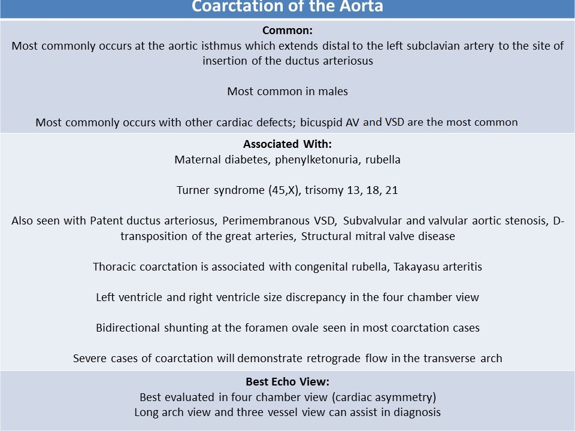
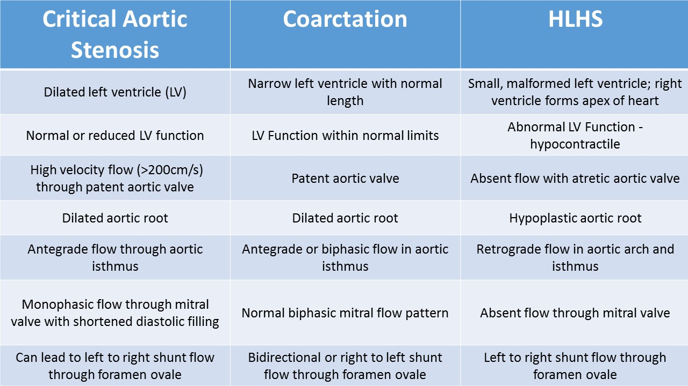

.jpg)
Abnormalities of the aortic arch
Coarctation of the Aorta:
General Information:- A discrete narrowing of the descending aorta
- Caused by abnormalities in development of the 4th and 6th arch
- Most commonly occurs at the aortic isthmus which extends distal to the left subclavian artery to the site of insertion of the ductus arteriosus
- Caused by malformation of the posterior shelf (a prominent posterior folding)
- 5-8% of congenital heart disease
- Male predominance
- Most commonly occurs with other cardiac defects; bicuspid aortic valve and VSD are most common
- Associated with maternal diabetes, phenylketonuria, rubella
- Associated with Turner syndrome (45,X), trisomy 13, 18, 21
- Prostaglandin E administered to maintain ductal patency
- Digoxin and diuretics are administered after birth to prevent CHF
- Associated cardiac abnormalities:
- Bicuspid aortic valve
- Perimembranous VSD: malalignment, conal VSD
- Subvalvular and valvular aortic stenosis
- D-transposition of the great arteries
- Structural mitral valve disease (supramitral valve ring, parachute mitral valve, Shone syndrome)
- Patent ductus arteriosus - postnatally
- Has been associated with berry aneurysms in the cerebral circulation

Pathophysiology:
- Blood pressure and pulse difference between the upper and the lower body (post-natal)
- Tolerated well in the fetus due to supply of the blood flow from the placenta to the lower fetal body
- Ductal tissue migrates into the aortic arch and constriction leads to coarctation and left ventricular dysfunction
- Bicuspid aortic valve provides reduced amount of blood flow to the aortic arch which leads to coarctation
- Severe coarctation can cause congestive heart failure
- Juxtaductal: stenosis of the isthmus at the junction of ductus arteriosus
- Pre-ductal: stenosis just proximal to the ductus; caused by abnormal intracardiac flow
- Post-ductal: stenosis just distal to the ductus
- Tubular hypoplasia: hypoplastic and elongated transverse arch between the left common carotid and the left subclavian artery, associated with other defects
- Thoracic coarctation: occurs beyond the origin of the left subclavian artery; associated with congenital rubella, Takayasu arteritis
Fetal Echo Findings:
- Cardiac asymmetry - left ventricle and right ventricle size discrepancy in the four chamber view; left ventricle is smaller/thinner than the right ventricle
- Important to look for other anomalies that can cause LV-RV size discrepancy and give false impression of coarctation
- Left superior vena cava
- Total anomalous pulmonary venous return
- Unbalanced AVSD
- HLHS
- Isthmus and transverse arch hypoplasia ( distal arch might be very hard to image); compare to the ductal arch size
- Three vessel trachea view allows side to side comparison of the aortic arch and ductal arch diameters
- Ductal shelf can be demonstrated on 2D in some cases
- Three vessel view can be used to compare the pulmonary artery and aorta; the pulmonary artery is larger than aorta
- Right ventricular hypertrophy may be present when ductal flow is restricted by coarctation
- Bidirectional shunting at the foramen ovale seen in most coarctation cases
- Left to right shunting at the foramen ovale seen in severe cases
- Severe cases of coarctation will demonstrate retrograde flow in the transverse arch
- VSD is the most commonly associated cardiac abnormality
- Ventricular septal defect with severe coarctation - left to right shunting
- Large ventricular septal defect with coarctation - bidirectional shunting
- Tricuspid valve annulus is much larger than mitral valve annulus
- Beam width artifact can cause a false appearance of narrowing on 2D imaging; anytime coarctation is suspected on 2D, Doppler evaluation should be performed to confirm the diagnosis
- Decreased peak systolic velocity proximal to the coarctation and increased velocity just distal to the narrowing
- Be sure that the Doppler cursor is in the area of coarctation in the aorta and NOT in the ductus or a pulmonary artery branch; Doppler evaluation of these two vessels normally demonstrates higher velocity, more turbulent flow than the normal aorta; incorrect cursor placement can cause a false positive diagnosis of a coarctation

Tubular hypoplasia
Hypoplastic arch
Interrupted Aortic Arch
General Information:- Relatively uncommon defect in which the continuity of the aortic arch is either completely disrupted or atretic
- Most severe form of coarctation
- Commonly seen in DiGeorge syndrome (type B IAA)
- Most common associated anomaly: posterior malignant type VSD with LVOT obstruction
- Other associated cardiac findings:
- Truncus arteriosus Van Praagh Type A 4 (conotruncal anomaly)
- Bicuspid aortic valve
- Transposition of the great arteries
- Double outlet right ventricle
- Aortopulmonary window
Types:
- Type A (30-40%):
- interruption occurs at the level of the isthmus (distal to the origin of the left subclavian artery)
- Type B (55-60%):
- most common type
- interruption occurs between the left subclavian artery and the common carotid artery
- associated with DiGeorge syndrome (deletion of chromosome 22q11-associated with aberrant right or left subclavian artery, right aortic arch)
- VSD is the most common associated defect
- when associated with LVOT obstruction and posterior malalignment VSD, it is considered a conotruncal anomaly
- Type C (1%):
- interruption occurs between the innominate artery and the left common carotid artery
- With posterior malalignment VSD, LVOT obstruction reduces the blood flow across the aortic valve and affects the cardiac output through the aortic arch
- The reduced blood flow through the aortic arch affects the growth of the aortic arch
- The flow through the ventricular septal defect helps the size of the left ventricle
- After birth, the blood circulation depends on the patency of ductus arteriosus; Prostaglandin E is essential to keep the ductus open
- Often LV-RV discrepancy in size
- Normal 4 chamber, if VSD present
- The flow throughout the VSD is bidirectional ( if with severe subaortic obstruction, the shunt of VSD can be left to right)
- Evaluate aortic valve morphology
- Evaluate the LVOT region and septal deviation
- Evaluate the relative size of the aortic valve compared to the pulmonic valve
- Aortic root and ascending aorta are usually small
- Evaluate of the presence of thymus
- Evaluate the color Doppler of the transverse arch
- Type B
- The ascending aorta has a straight appearance instead of the normal slightly curved appearance
- Two branches: left common carotid and brachiocephalic artery
- Most cases have a VSD = normal 4 chamber view
Interrupted aortic arch type B. There is an interruption between the origin of the left subclavian artery and the origin of the common carotid artery.
Interrupted aortic arch type A with PDA.
Posterior malalignment VSD
Right Aortic Arch:
- 6 pairs of aortic arches form from the distal end of the truncus arteriosus by 28 - 35 days gestation
- Some develop into permanent structures and others are resorbed
- The left 4th arch normally becomes the left sided aortic arch
- Left 6th arch normally forms ductus arteriosus and pulmonary artery = left sided ductus arteriosus and pulmonary artery
- Best evaluated in the three vessel trachea view
- Normal vessels form a "V" with the point to the left of the trachea
- Aberrant right subclavian artery
- Partial regression of the left 4th arch
- Left sided arch with aberrant right subclavian artery
- Arch branches in order of origin = right common carotid, left common carotid and left subclavian
- Right subclavian artery courses posterior to the trachea and esophagus to reach the right arm
- Left 6th arch forms ductus arteriosus = left sided ductus arteriosus and pulmonary artery
- Isolated aberrant right subclavian artery is considered a normal variant
- If associated with other cardiac malformations, risk of chromosomal defects is increased
- Associated with trisomy 21 and 22q11 deletion
- Right sided arch with left sided ductus
- Regression of the left 4th arch, right 4th arch becomes aorta
- Left 6th arch forms the ductus arteriosus = left sided ductus arteriosus and pulmonary artery
- Right arch and pulmonary artery are connected by the left sided ductus
- Forms a "U" posterior to the trachea
- Right sided arch with right sided ductus
- Regression of the left 4th arch, right 4th arch becomes aorta
- Right 6th arch forms the ductus arteriosus = right sided ductus arteriosus and pulmonary artery
- Produces a "mirror image" of the normal three vessel trachea view
- Vessels form a "V" with the point to the right side of the trachea
Double Aortic Arch:
- The left and the right 4th arches remain patent and encircle the trachea
- Ductus is left sided and connect the left arch segment to the pulmonary artery
- Described as demonstrating an appearance similar to the lowercase Greek letter Lambda λ
- The right common carotid artery and subclavian artery originate from the right sided arch
- The left common carotid artery and subclavian artery originate from the left sided arch
- Can cause tracheal compression